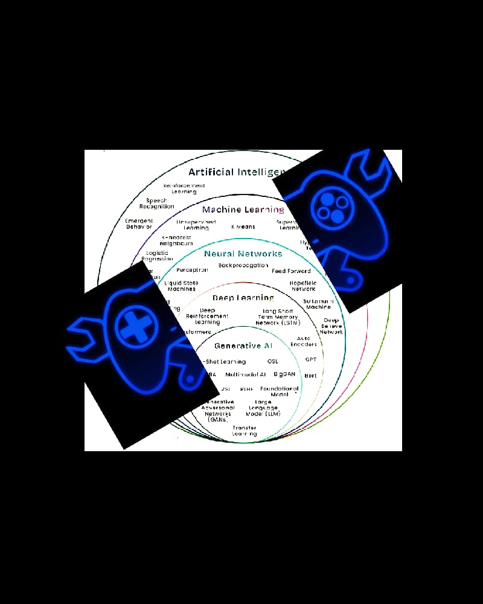

I am a final-year undergraduate engineer with a strong academic and practical grounding in Machine Learning, Deep Learning, and Data Science. My work centers on developing end-to-end data-driven solutions, experimenting with neural network architectures, and deploying intuitive tools that solve real-world problems. Alongside my work in data science, I channel my creative problem-solving into indie game development—designing responsive 2D mechanics, crafting custom pixel art, and programming gameplay logic..
From the moment I wrote my first lines of code, I was drawn to the craft of building something meaningful from scratch. That initial spark has shaped my journey as a developer, driving me to continuously expand my skill set across modern programming languages, frameworks, and system architectures.
When I'm not coding, you can find me reading novels, or helping at my family venture.
Swipe or drag to explore my latest works. Use the arrows to navigate.
Outside of software development, I manage the operations for Hotel Empire Palace in Udaipur, Rajasthan. If you are looking for partnerships, bookings, or related inquiries, feel free to reach out directly.